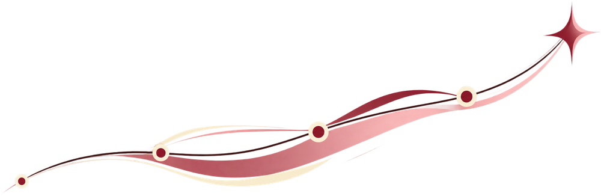
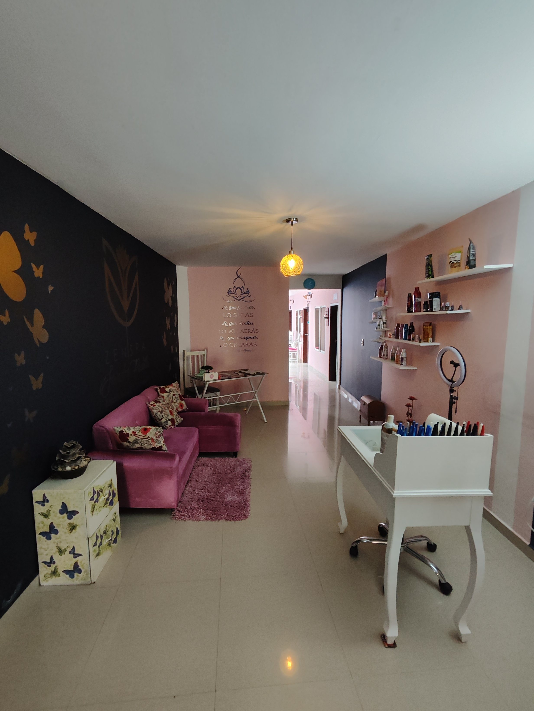
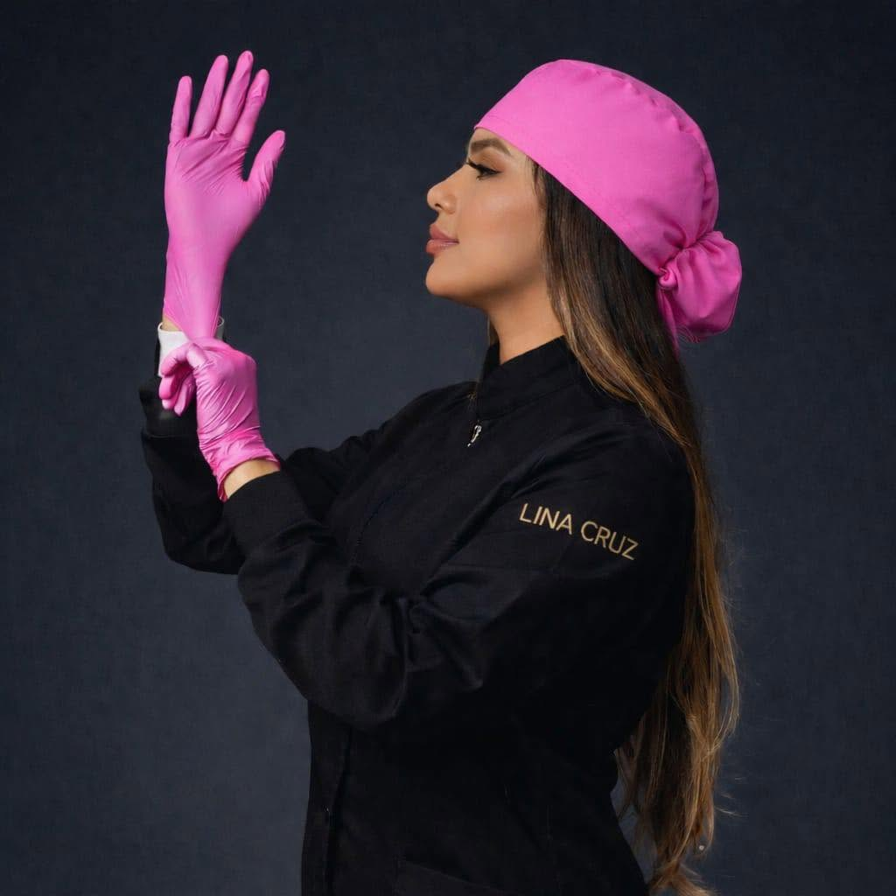
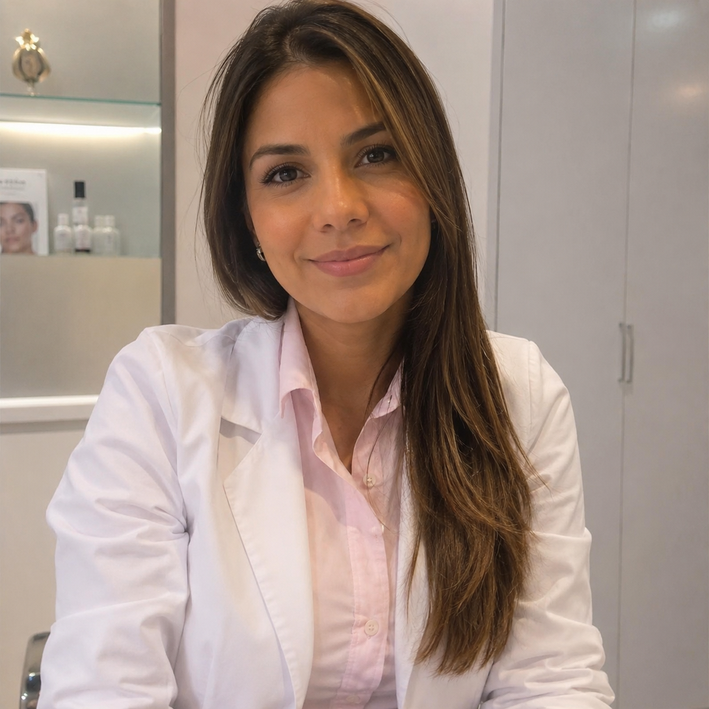
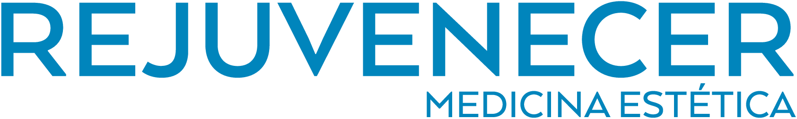

Tus tratamientos pueden funcionar. Tu forma de conseguir pacientes, no tanto.
01
Publicas constantemente, pero siguen llegando pocos mensajes de personas realmente interesadas.
02
Dependes demasiado de recomendaciones o de que Instagram decida mostrarte.
03
Has probado pautar, pero no tienes claro si realmente te está trayendo pacientes o solo gastando presupuesto.
04
Ves cómo otros centros ganan más visibilidad, reconocimiento y movimiento mientras el tuyo parece avanzar más lento.
El problema no siempre es que estés haciendo poco. Muchas veces estás haciendo cosas, pero sin una estrategia clara detrás.
02 / Sistema GLOSS
Así hacemos que más personas pasen de conocerte a agendar.
No todos los centros tienen el mismo problema. Primero identificamos en qué parte del recorrido se están perdiendo oportunidades.
01
Te descubre
Meta, Google y contenido ayudan a que más personas correctas conozcan tu centro.
→
02
Entiende por qué elegirte
Tu oferta, comunicación, resultados y contenido construyen confianza.
→
03
Pregunta
WhatsApp, formularios o una landing convierten ese interés en una conversación.
→
04
Agenda
El seguimiento y el proceso comercial ayudan a que más conversaciones terminen en citas.
Gloss conecta cada parte del recorrido y prioriza lo que más necesita tu negocio hoy.

03 / Resultados y proyectos
Distintos negocios. Un trabajo que se puede ver.
Casos de estética, con sus cifras y sus pruebas.
Caso destacado · Roldanillo, Colombia
Zen Spa
De depender del voz a voz a abrir nuevas puertas desde Google y Meta.

El negocio detrás del caso.
Antes
Dependían del voz a voz y les costaba aparecer cuando alguien buscaba un spa en la zona.
Qué hicimos
Reorganizamos sus servicios, trabajamos el SEO local y Google Business Profile, y lanzamos campañas de Meta Ads para sus tratamientos.
Resultados del reporte
633conversaciones
16pacientes registrados
$10.400.000ingresos reportados · COP
Inversión publicitaria registrada: $775.347 COP. Cifras del reporte del caso, no una proyección.
Zen Spa · reporte de resultadosZen Spa · conversaciones e inversión en Meta
Zen Spa · captura de posicionamiento local
La captura muestra posición 1 para la búsqueda y zona medidas. No implica un ranking permanente.
Su experiencia
La voz de quien está al otro lado.
La reseña original de Zen Spa, aquí mismo.
Más casos, otras prioridades.
Conversaciones, seguimiento y visibilidad local.
Meta Ads
Monica Skin Care
Coral Gables, Florida, USA
Campañas para generar conversaciones sobre sus tratamientos y abrir oportunidades de atención.
2.702conversaciones registradas
Monica Skin Care · resultados de Meta AdsSu reseña en Facebook

Resultado inicial · Cali
Dra. Lina Cruz
Primeros días de campaña
Un lanzamiento orientado a iniciar conversaciones sobre sus tratamientos.
318conversaciones · $427 COP por conversación
Dra. Lina Cruz · captura inicial de Meta Ads
$135.908 COP invertidos · 20.885 impresiones · 13.579 personas alcanzadas. Según el reporte operativo, la agenda de esa semana estaba prácticamente ocupada; la captura acredita conversaciones, no citas realizadas.

Campañas y resultados
Dra. Laura Erazo
Del mensaje al paciente
69pacientes registrados en el reporte
6.065 conversaciones y $65.027.670 COP en ingresos reportados, con $8.024.785 COP de inversión publicitaria.
Dra. Laura Erazo · reporte de resultadosVer también la captura de MetaDra. Laura Erazo · 19 campañas en Meta
Google y visibilidad local
Dr. Carlos Mario Rojas
Que te encuentren en tu zona
“Está viniendo mucha gente que nos dice que nos ha visto en Google”.
Su mensaje conecta el descubrimiento en Google con el movimiento percibido en el negocio.
Dr. Carlos Mario Rojas · mensaje sobre Google
Experiencia reportada por el cliente; no equivale a una medición de citas atribuibles.
Proyectos realizados.
Web y presencia digital. Sin atribuir resultados que aún no están medidos.

Rejuvenecer
Desarrollo web, estructura digital y activos para recibir consultas. Campañas en proceso.
Rejuvenecer · sitio web realizado
Sierva María
Diseño y desarrollo web para presentar sus tratamientos y facilitar el contacto.
Sierva María · sitio web realizado
Cada caso tiene su contexto. Los resultados mostrados corresponden a sus capturas y reportes; no son una garantía para otros negocios.
04 / Qué hacemos
Estas son las herramientas que usamos para ayudarte a generar más citas.
01
Meta Ads + Google Ads
Publicidad
Creamos campañas para llegar tanto a personas nuevas como a quienes ya están buscando tratamientos como los tuyos.
Meta Ads · Google Ads · Remarketing · Optimización
02
Estrategia + producción
Contenido
Planificamos y producimos contenido pensado para generar atención, confianza y conversaciones, no solo para mantener activo Instagram.
Estrategia · Guiones · Reels · Carruseles · Edición · UGC y creadores
03
Que te encuentren en tu zona
Google & visibilidad local
Ayudamos a que tu negocio gane presencia cuando alguien busca tratamientos en tu zona, tanto en Google y Maps como en las nuevas experiencias de búsqueda y recomendación con IA.
Google Business Profile · SEO local · Reseñas · Información clara y verificable
04
Del interés a la conversación
Web & conversión
Creamos webs, landing pages y puntos de contacto que facilitan el siguiente paso. Conectamos WhatsApp, formularios y seguimiento para ayudar a convertir más conversaciones en citas.
Web · Landing pages · WhatsApp · Formularios · Scripts y seguimiento
No tienes que implementar todo al mismo tiempo. Elegimos qué tiene más sentido según tu negocio y el punto donde hoy se están perdiendo oportunidades.
05 / Por qué Gloss
Lo que hacemos importa. Cómo lo hacemos, más.
01
Especializados en el sector estético
Trabajamos alrededor de negocios de estética, sus tratamientos, sus pacientes y la forma en que realmente compran.
02
No aplicamos la misma fórmula a todos
Primero entendemos qué está frenando tu crecimiento y después decidimos qué vale la pena implementar.
03
Miramos más allá del alcance
Medimos visibilidad e interacción, pero el objetivo final es que eso termine generando conversaciones, citas y oportunidades reales.
04
Conectamos las piezas
Contenido, Meta, Google, web y seguimiento trabajan mejor cuando responden a una misma estrategia.
06 / Cómo trabajamos
Así trabajamos contigo.
01
Entendemos tu punto de partida
Revisamos tus tratamientos, tu ciudad, cómo llegan hoy tus pacientes y qué has intentado hasta ahora.
02
Definimos qué mover primero
Elegimos los canales, mensajes y acciones que más sentido tienen para tu negocio. No implementamos cosas solo por tenerlas.
03
Lanzamos, medimos y ajustamos
Ponemos la estrategia a funcionar, revisamos qué responde mejor y vamos optimizando con base en resultados reales.
07 / Tu siguiente paso
¿Gloss Growth es para ti?
Sí puede ser para ti si:
✓Ya tienes tratamientos que funcionan y capacidad para atender más pacientes.
✓Quieres depender menos del voz a voz o de publicar esperando que algo pase.
✓Tienes presupuesto para invertir en crecimiento y quieres usarlo con una estrategia clara.
✓Quieres una estrategia clara y alguien que te ayude a ejecutarla.
✓Buscas más citas y oportunidades reales, no solo seguidores o alcance.
Probablemente no todavía si:
—Apenas estás empezando y todavía no tienes una oferta clara.
—No tienes capacidad para atender nuevos pacientes.
—No estás dispuesto/a a invertir en publicidad y crecimiento.
—Solo buscas que alguien publique contenido sin una estrategia detrás.
—Esperas resultados inmediatos sin dar espacio para medir, aprender y ajustar.
Si estás en el primer grupo, probablemente vale la pena revisar tu caso.
08 / Preguntas frecuentes
Lo que conviene saber antes de empezar.
Depende de tus tratamientos, tu ciudad y lo que quieras conseguir. En el diagnóstico revisamos qué inversión tiene sentido para tu caso. El presupuesto publicitario se define aparte del trabajo de gestión.
Las campañas pueden generar conversaciones desde sus primeros días, pero necesitamos datos para entender su calidad y ajustar. Google y el contenido suelen requerir más continuidad. No prometemos un plazo igual para todos.
Revisamos qué se ofrecía, a quién se mostraba y qué pasaba después del mensaje. Así identificamos qué conviene corregir antes de volver a invertir.
No. Priorizamos lo que más necesita tu negocio hoy y podemos sumar otras piezas cuando tenga sentido.
Sí. Podemos coordinar la estrategia y las tareas con tu equipo, definiendo responsabilidades para que el trabajo avance en la misma dirección.
No. También hemos trabajado con negocios fuera de Colombia, como Monica Skin Care en Coral Gables, Florida. Revisamos las necesidades y condiciones de cada mercado.
Revisamos qué base necesitas primero: una oferta clara, contenido, tu perfil de Google o una web que facilite el contacto. No hace falta construirlo todo a la vez.
Ese es el propósito del diagnóstico: entender cómo llegan hoy tus pacientes y dónde se están perdiendo oportunidades, para decidir qué mover primero.
Revisemos tu caso
Si ya tienes tratamientos que funcionan, el siguiente paso es entender qué está frenando tus citas.
Revisamos tu caso, tus tratamientos, tu ciudad y cómo llegan hoy tus pacientes para decirte qué tendría más sentido mover primero.
Solicita tu diagnóstico
Cuéntanos sobre tu negocio. Prepararemos tu mensaje para continuar por WhatsApp.